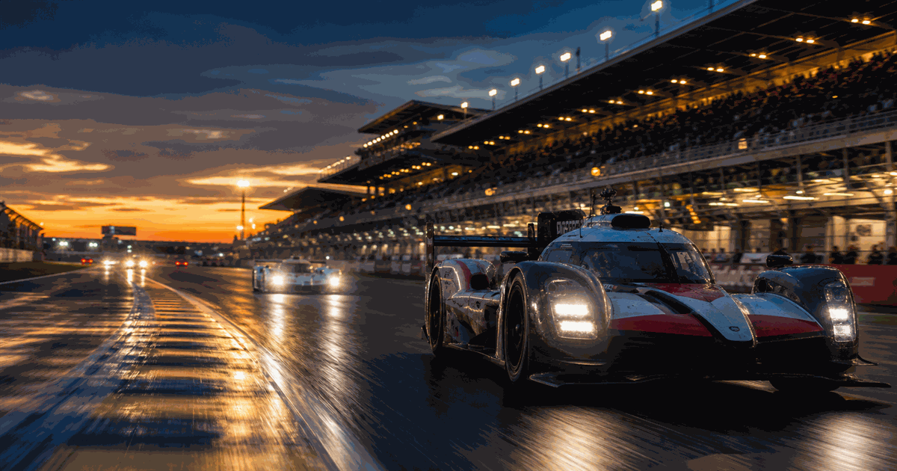
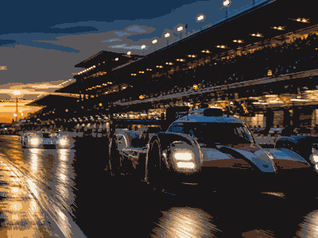

motorsport event view
Le Mans 24 Hours
A compact visual event view of what the event is, how the current edition works and which parts matter most.
First held1923
FrequencyAnnual
Next edition2026
Duration24 hours
History viewEdition results and parts
Use the year switcher for recent editions. The selected edition stays inside this framed sport view.

More motorsportInterested in more motorsport?Explore related events, places and calendar moments.